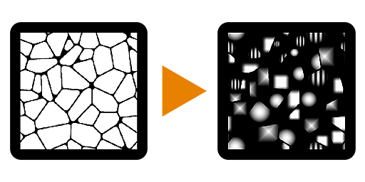

Flood Fill Mapper


Flood Fill Mapper (Grayscale)
In: Filters/Effects
Complex
Description
Flood Fill Mapper allows remapping of an existing Pattern or Texture onto every single cell from a Flood Fill. It is different from other Flood Fill conversions like Random Grayscale or Gradient in that it does not generate solid colors or values, but allows you to use you own input maps. It can be seen as a sort of combination of Flood Fill and Tile Sampler or Shape Mapper, as it provides quite a few similar controls and interfaces.
The Color version has additional controls to work with Normal Maps, where it can compensate for tangent-space Normap Map rotations.
Parameters
Inputs
- Flood Fill Bbox: Color Input
Standard Flood Fill input, required. - Pattern Input 1-8: Grayscale/Color Input
Custom pattern image input. - Pattern Distribution Map: Grayscale Input
ID Map to determine which pattern goes to which cell. Can come from other Flood Fill Map such as Flood Fill to Index. - Scale Map: Grayscale Input
Map to determine Scale per cell. - Rotation Map: Grayscale Input
Map to determine Rotation per Cell. - Luminance Offset Map: Grayscale Input
Map to set Luminance per Cell
Parameters
- Tiling Mode: No Tiling, H+V
Set wether to use Tiling or not. Only visible if Size or Scale ar set below 1. - Pattern
- Pattern Input Number: 1 - 8
Set amount of Custom Pattern Inputs to use. - Pattern Distribution Mode: Random, Shape Size, Distribution Map Input
Set the method to determine what Pattern is shown in a Cell. - Pattern Distribution Jittering: 0.0 - 1.0
Allows for a slight varaition or Offset in the Pattern distribution without changing everything through teh Random Seed.
- Pattern Input Number: 1 - 8
- Size
- Size Mode: Relative to Texture, Relative to Shape BSphere, Relative to Largest Shape, Relative to Smallest Shape, Fit Shape BBox
Set how the size of the pattern in each cell is determined. - Size: 0.0 - 1.0
Allows for non-uniform scaling of the Pattern. - Scale: 0.0 - 1.0
Set the global (uniform) scale for the effect. - Scale Map Mulitplier: 0.0 - 1.0
Set influence of the optional Scale Map. - Scale Random: -1.0 - 1.0
Set the amount of random variation within pattern scale.
- Size Mode: Relative to Texture, Relative to Shape BSphere, Relative to Largest Shape, Relative to Smallest Shape, Fit Shape BBox
- Rotation
- Rotation: 0.0 - 1.0
Set global, uniform rotation for every cell. - Rotation Map Mulitplier: 0.0 - 1.0
Set influence of the optional Rotation map. - Rotation Random: 0.0 - 1.0
Set the amount of random rotation for every cell. - Rotation Autoscale: False/True
Set if a pattern should adjust its scale to fit within a cell when rotated.
- Rotation: 0.0 - 1.0
- Position
- Position Offset: 0.0 - 1.0
Set global Position offset for every cell. - Position Offset Alignment: Texture, Pattern
Set to either align the offset 0-point to the Pattern cell or to the texture. - Position Offset Random: 0.0 - 1.0
Set the amount of per-cell Position offset randomisation.
- Position Offset: 0.0 - 1.0
- Color (Only for Grayscale version)
- Luminance Range: 0.0 - 1.0
Sets the global contrast on the texture, where 0 becomes middle gray. - Luminance Range Random: 0.0 - 1.0
Sets the amount of randomisation for the Luminance Range. - Luminance Offset: -1.0 - 1.0
Sets the offset for the Luminance, working as a brightness control. - Luminance Offset Random: 0.0 - 1.0
Sets the amount of randomisation for the Luminance Offset. - Luminance Offset Map Mulitplier: 0.0 - 1.0
Sets the influence of the optional Luminance Offset map. - Background Color: (Grayscale value)
Sets the background color onto which textures are blended.
- Luminance Range: 0.0 - 1.0
- Color (Only for Color version)
- Is Normal Map: False/True
Set to interpret Pattern Input as a Normal Map. Will compensate and fix Normal Tangent space rotation. - Normal Format: DirectX, OpenGL
Switch between different Normal Map formats (inverts the green channel). Only Active when Is Normal Map is True. - HSL Adjustment: -1.0 - 1.0
Adjust HSL globally. - HSL Random: -1.0 - 1.0
Set HSL randomisation per cell. - Alpha Adjustment: -1.0 - 1.0
Set global Alpha adjustment, reduces Alpha contrast. - Alpha Random: -1.0 - 1.0
Set Alpha Adjustment randomisation per cell. - Background Color: (Color value)
Sets the background color onto which textures are blended.
- Is Normal Map: False/True
.
Example Images
